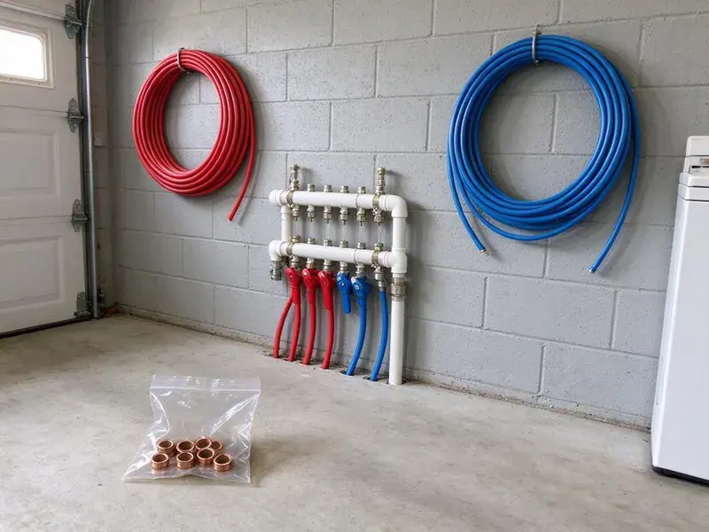

Water Line Installation in Wellington, FL
Dealing with old, corroded or undersized water lines in Wellington, FL? HDF Plumbing specializes in new water line installation for homes and businesses.
- Fast Scheduling and Locates
- Upfront Pricing
- Experienced, Licensed Plumbers
- Upfront Pricing
Expert Water Line Replacement & New Installs in Wellington, FL.
We handle utility locates, permits and inspections so your new line goes in with no hassle.
Your Experts for Water Line Installation in Wellington, FL
HDF Plumbing specializes in complete water line installation across Wellington, FL. Whether you are building a new home or need to replace an aging main water line, our experienced technicians deliver a reliable, code-compliant installation.
Our expertise includes:
- Trenchless and traditional excavation methods
- PEX and Copper Pipe Installation
- Meter, curb stop, PRV and main shutoff connections

Additional Plumbing Installation Services in Wellington, FL
We install water heaters, pumps, lines, and fixtures across Wellington, FL with careful, permitted work that passes inspection the first time.


Customers
Why Choose HDF Plumbing for Water Line Installation in Wellington, FL?
Choosing the right plumber for water line installation is essential for long-term reliability. We are known for careful planning and execution on every project.
- Clean Restoration, We backfill, compact and regrade the trench so your yard looks the way it did before.
- Right Pipe Size, We size the line from your fixture count and run length so showers and irrigation do not fight for pressure.
- Clean Installation, Our team works efficiently and leaves your property as clean as we found it, minimizing disruption to your daily routine.
Citywide Coverage
We install water lines on every type of lot in Wellington, from small infill parcels to large properties with long runs from the road. Our crews plan the route around landscaping, driveways and other utilities.
Experienced Team
The team works with copper, PEX and HDPE regularly and knows the right fittings and joining methods for each. They also understand how pressure regulators, expansion tanks and softeners tie into a new main.
Safety-First Approach
Safety is our top priority during any water line installation. We follow strict protocols to protect our team, your property and anyone nearby, especially when excavating or working near utility lines.
Trusted Certified Wellington Plumbing Services Professionals
At HDF Plumbing, we take pride in providing certified plumbing services throughout Wellington, FL. Backed by recognized industry credentials, our experienced plumbers combine technical skill with genuine customer care. Whether it is repair, installation, or maintenance, we follow strict safety and quality standards to deliver long-lasting results you can trust.
Call Us Now PHCC Plumbing Contractor Recognition
PHCC Plumbing Contractor Recognition Better Business Bureau (BBB) Accreditation
Better Business Bureau (BBB) Accreditation Angi Certified Pro
Angi Certified Pro ISO 9001 Quality Management Certification
ISO 9001 Quality Management CertificationLong-Lasting Water Line Installation Services in Wellington, FL
Insulating Water Lines for Florida Weather in Wellington, FL
Frozen pipes are rare in most of Florida, and many homes have outdoor plumbing that would never hold up in a northern winter. Even where winters are mild, a hard freeze can still be a threat to exposed water lines. HDF Plumbing offers water line installation with proper insulation, especially for lines running through unheated spaces or near exterior walls in Wellington, FL. This proactive step helps protect your pipes from freezing and bursting, safeguarding your home against costly water damage during cold snaps. We recommend insulation materials based on local conditions.

Main Water Line Replacement in Wellington
Over time, main water lines can corrode, crack or leak because of shifting soil, tree root intrusion or age. HDF Plumbing focuses on replacing old, failing main water lines, often upgrading from galvanized steel or polybutylene to more durable PEX or copper. We handle the excavation, pipe laying and connection to your home and the public water supply, with little disruption and lasting performance. Our team in Wellington is experienced with local soil types and infrastructure.
New Construction Water Line Installation in Wellington, FL
Building a new home or commercial property in Wellington? Our team works closely with builders and homeowners to design and install a complete water line system. This includes the main service line, interior distribution lines and connections for all fixtures and appliances. We make sure every installation meets future demand and current codes and provides strong water pressure throughout the property.
PEX and HDPE Water Line Installation in Wellington, FL
PEX and HDPE are flexible, which means fewer fittings in the ground and better tolerance for soil movement. HDPE is especially durable for long runs and holds up against cracking in expansive clay. We use approved compression or fusion fittings and add tracer wire so the line can be found with a locator later. PEX must stay out of sunlight before burial, so we store and lay it carefully on every job site.
Compliance and Permits for Water Lines in Wellington
Installing or replacing a main water line in Wellington usually requires specific permits and adherence to local plumbing codes. HDF Plumbing handles all necessary permits and makes sure every water line installation meets municipal and state regulations. Plumbing work in Florida follows the Florida Building Code, whose plumbing volume is based on the International Plumbing Code. We are familiar with the local permitting process, so your project stays compliant and avoids fines or issues down the line. We take the stress out of navigating local paperwork.
Upsizing Water Lines for Better Pressure in Wellington, FL
Many homes built decades ago have a 3/4 inch line that cannot keep up with modern fixture loads, irrigation and pools. If your pressure drops when two showers run or the sprinklers are on, an undersized line may be the cause. We test static and flowing pressure, then calculate whether a larger line will make a real difference. Upsizing is often paired with a new pressure reducing valve and main shutoff.
Main Water Service Line Installation in Wellington
The main water line brings water from the municipal supply into your home. HDF Plumbing focuses on installing new main water service lines, with proper sizing and connection to your existing plumbing system. We handle everything from trenching to final connection, using durable materials that can stand up to local ground conditions and changing temperatures, preventing common issues like frozen or burst pipes.

Copper Water Line Installation in Wellington, FL
Copper has been a proven material for water lines for decades, known for its longevity, antimicrobial properties and resistance to high temperatures and pressure. HDF Plumbing provides professional copper water line installation in Wellington, FL, for homeowners who prefer its long history. While often more expensive upfront, copper offers excellent reliability and can add value to your property. Our skilled plumbers make precise solder joints and secure connections.
Water Line Installation Near Me in Wellington, FL
Our team is always ready to respond quickly, so your water line installation is handled efficiently and effectively, whether it is a planned upgrade or an urgent replacement in Wellington, FL.
When you search for 'water line installation near me' in Wellington, you want a reliable, local plumber who understands your needs. HDF Plumbing is your community partner, offering prompt and professional service for all your water line projects.
HDF Plumbing at a Glance
- Licensed and insured plumbers serving Wellington, FL
- 24/7 emergency service with same-day scheduling
- Upfront, flat-rate pricing before work begins
- 4.9-star rated by 739+ Florida customers
Wellington Map
Wellington Information
- Population
- 61,634
- Area codes
- 561/772/954
- Service area
- Wellington and communities within 40 miles
- Nearby
- West Palm Beach, Boynton Beach, Palm Beach Gardens, Delray Beach
A high water table across much of Florida affects drainage, septic design, and how deeply crews can dig for underground repairs. For homeowners in Wellington, FL, a properly installed, durable water line is the best way to prevent costly leaks and foundation damage.
Expert Services
Trust our professionals for reliable HDF Plumbing solutions in Wellington, FL.
Our Specialized Plumbing Services in Wellington, FL
At HDF Plumbing, we provide a complete range of plumbing services across Wellington, FL. From leak detection to full system installations, our team ensures fast, precise, and affordable service for both residential and commercial properties. Explore our core services below:


How Our Water Line Installation Process Works in Wellington, FL
Installing a new water line takes planning, so we keep you updated from the first visit through final restoration.
Request a Quote
Start by calling (904) 925-7356 to schedule an on-site consultation. Our team will review your current plumbing, discuss your needs and provide a detailed, transparent quote.
Site Assessment
We conduct a careful inspection of your property, identifying the best route for your new water line and checking for underground utilities. This planning heads off surprises.
Permitting & Prep
HDF Plumbing handles all necessary permits for water line installation in Wellington. We prepare the site by carefully excavating trenches where required, following all safety standards.
Frequently Asked Questions About Water Line Installation in Wellington
The cost of water line installation in Wellington can vary quite a bit, typically ranging from $1,500 to $6,000 for a main service line. Factors include the length of the line, the material used, the excavation method, trenchless or traditional, and any permits or site restoration. We provide detailed, upfront estimates after an on-site assessment.
A typical residential water line takes one to two days, plus time for utility locates and inspection. Rocky ground or long runs can tack on a day or two.
Yes, in most cases replacing or installing a main water line in Wellington, FL requires a plumbing permit from the local building department. This confirms the work meets local building codes and safety standards. HDF Plumbing handles all the permitting for our clients, keeping the project fully compliant.
Common signs include persistently low water pressure throughout your home, discolored or rusty water from your taps, frequent leaks in your yard or near the foundation, or unusually high water bills without a clear cause. These usually indicate an aging or failing main water line.
For most homes, PEX and copper are generally the best materials. PEX is flexible, corrosion-resistant and handles minor ground shifts well. Copper is very durable, long-lasting and resists bacterial growth. Around Wellington, flushing the water heater yearly and descaling tankless units helps keep mineral buildup under control. The choice often depends on budget, water chemistry and site conditions.
We prioritize high-quality, reputable brands for our water line installations. For PEX, we often use Uponor Wirsbo or Viega PureFlow. For copper, we use Type L or Type K copper from trusted manufacturers. Our material selection focuses on durability and performance in your local conditions.
Pipe manufacturers offer long warranties on PEX and HDPE, and copper has a long track record. We also warranty our installation labor and will go over the specific terms with you before work starts.
PEX is flexible, less expensive, resistant to freezing and corrosion, and has fewer fittings, which means fewer potential leak points. Copper is rigid, more expensive, has a proven track record, is naturally antimicrobial and can withstand higher temperatures. Both are excellent choices, and the best option depends on your budget, property needs and local water conditions in Wellington.
What People Are Saying About Our Plumbing Experts?

Sofia M.
Two new toilets installed in one visit, no mess left behind, and the tech even adjusted a faucet he noticed was dripping. Fair pricing and really friendly.
Toilet Installation · Delray Beach, FL
Patricia H.
We had a slab leak that two other companies could not find. HDF Plumbing located it in under an hour, explained our options, and the price matched the quote to the dollar.
Slab Leak Repair · Wellington, FL
Daniel K.
A pipe burst at 11 pm and they actually answered. The plumber showed up within the hour, shut everything down, and had us back to normal the next morning. Could not ask for more.
Emergency Plumbing · Boca Raton, FLLaura S.
I scheduled a water heater replacement, and the team made the process smooth and affordable. The new unit works perfectly, and they cleaned up after completing the job.
Water Heater Replacement · Palm Beach Gardens, FL
Mark T.
When our office needed drain cleaning, HDF Plumbing provided quick, reliable service. The plumber arrived on time and made sure every drain flowed perfectly before leaving. Very satisfied.
Drain Cleaning · Boca Raton, FL
Robert G.
The trenchless sewer replacement saved our front yard. They walked us through the camera inspection footage first so we knew exactly what we were paying for.
Sewer Line Replacement · Delray Beach, FL